ASK-DAO-MACHINE · 知识发现系统
ask-dao 知识发现系统
在生物医学领域的实践 已有的 AI4S 生态擅长解决问题 ——给定问题，它能算出答案。但「问题从哪来 」这一环长期空缺：能定义问题、提出问题的系统，远比能解题的系统稀缺。问题路 和想象路 两种方式来产生新问题与新知识。
01 / 26
汇报大纲
一句话概括这次汇报 机器能稳定产出真问题 了；新的知识也第一次被算出来 了；但世界新问题（N3）至今仍是 0 ——这一点我不粉饰。
一、原理 两条独立的路（问题路 / 想象路）+ 四道门 + 四个等级（N0–N3）。判不了的不产出 ，两条路互不评判。二、在生物医学的实践 一篇真实开放获取论文（CC BY 4.0）→ 54 条 可判问题；其中 3 条 是机器从论文自报的 HR/CI 直接算出来 的残余混杂门槛。三、dao 模型在生物医学的实践 一个专门用来提问的微调模型 ：v0.3 = v0.2 + RFT 后训练，从论文里提出作者没明说的开放科学问题。目前限制于生物医学领域。四、扩展的实践 同一套判据换领域：27 个领域 / 702 个配对 / 144 座结构桥梁 ；想象路走完 6,642 个组合词；音乐与记录域重算出的已知结果对上了 。五、方向与瓶颈 方向：多模态实体提取 （图像 / 声音 → 直接抽实体，尚未实现）。瓶颈：尚未发现 N3 级新问题 。全部数字可用仓库里的命令复现；本 deck 的配图由 tools/deck_figs.py 从同一批产物生成。
02 / 26
一、原理 01
两条独立的路，两套成功标准 这是 v0.3.0 确立的架构，此后没有变过：判不了的不产出 ，两条路互不评判。
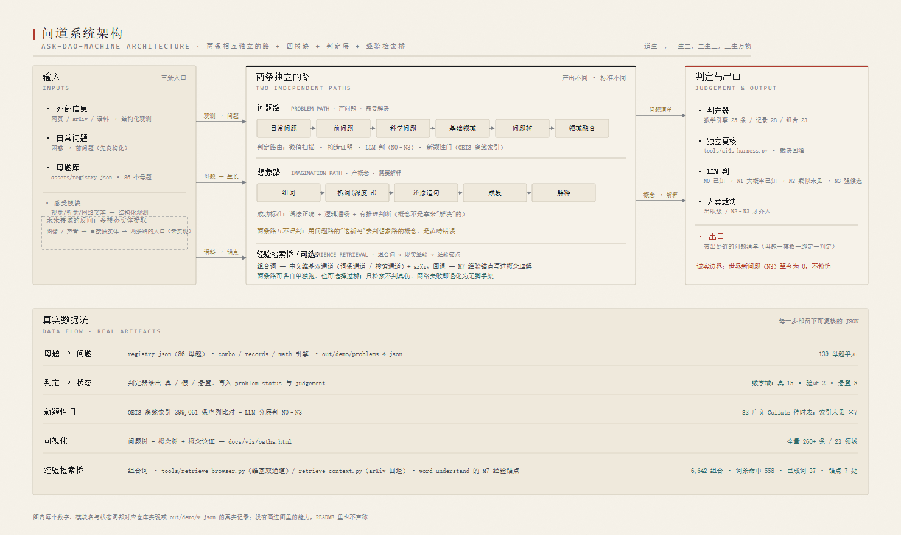
问道系统架构：两条相互独立的路 + 四模块 + 判定层 + 经验检索桥。图内每个数字、模块名与状态词都对应仓库实现或 out/demo/*.json 的真实记录。 问题路 · 成功标准 答案成立 / 可判 。每条问题必须带 route（判定方式），判不了的不产出。想象路 · 成功标准 语法正确 + 逻辑通畅 + 有推理判断 ——不是「有真实所指」。互不评判 用问题路的逻辑（「这新吗」「有真实所指吗」）去判想象路的概念，是范畴错误 。经验检索桥（可选） 把组合词接到现实经验（维基双通道 + arXiv 回退 → 经验锚点）。过桥不改变任何判定 ，检索失败即退化为无脚手架。实现：src/ask_dao_machine/ · 架构图见项目站点 §系统结构。
03 / 26
一、原理 02
什么算「新」：四道门 + 四个等级 把「新」拆成可操作的门 ，而不是形容词。四道门全过才叫 N3——至今 = 0 。
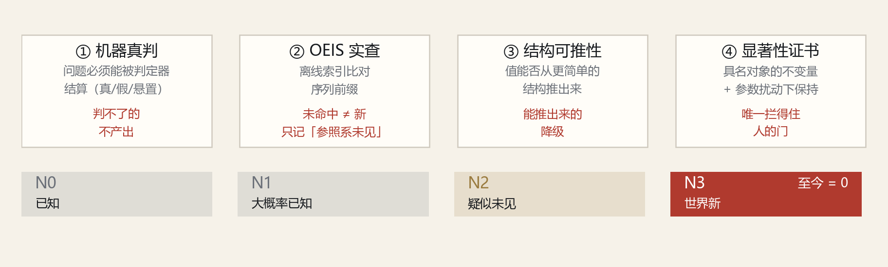
四道门（上）与四个等级（下）。纪律：显著性 > 新颖性 ——任选参数的序列同样「检索未见」，只有显著性证书拦得住。 N0 已知 → N1 大概率已知 → N2 疑似未见 → N3 世界新 。「文中未见」只写在「参照系未见」一栏，不等于文献没有。
04 / 26
一、原理 03
问题从哪来：四种机制 前三种通用，第四种是领域包。「作者已提出」与「机器提出」必须分开标注 ——前者不算新问题。
① 作者自陈未解 抓 open problem / remains unclear / 尚不明确。来源标注：作者已提出（不算新） 。② 文本张力 抓 however / yet / inconsistent 处的分歧。来源标注：机器提出 。③ 结构追问 对结论句套四问：范围 / 反例 / 机制 / 定量 。来源标注：机器提出 。④ 领域包（生物医学） 10 类方法学缺口 + 从 HR/CI 直接算 E-value。来源标注：机器提出 / 作者已论及（分标 ）。实现：src/ask_dao_machine/input_paper.py · domains_biomed.py；产物每条带 evidence（触发它的原文句）与 route（判定方式）。
05 / 26
二、在生物医学的实践 · 先讲清楚这篇论文
常吃代糖，会不会更容易得肾病？ 论文：*Association of artificial sweeteners intake and risk of CKD: a prospective cohort study*（人工甜味剂摄入与慢性肾病风险的关联 · 前瞻性队列研究）。开放获取，CC BY 4.0，全文 32,787 字符。
问的问题 常吃人工甜味剂（代糖：阿斯巴甜、三氯蔗糖这类）的人，会不会更容易得慢性肾病（CKD） ？怎么做的 英国生物样本库 156,000 人 ，跟踪中位 13.3 年 ；用一次 24 小时饮食回想记录吃了什么，再看谁后来确诊肾病。三个发现 ① 代糖吃得最多的那组 vs 完全不吃：风险高 19% （HR 1.19）。② 代糖多 且 遗传风险高：风险高 49% （HR 1.49）。③ 把糖换成等甜度的代糖：风险高 2% （HR 1.02）。作者结论 代糖与肾病风险升高有关，且这个关联在各遗传风险层都存在；换代糖并不能降低风险 。关键前提 ：这是观察性研究 ，不是随机试验——研究者没法随机分配谁吃代糖。这一点决定了下一页要讲的问题，也是机器能插上手的地方。
06 / 26
二、在生物医学的实践 · 新问题
一篇论文 → 54 条可判问题 输入：CC BY 4.0 开放获取临床研究（PMC13331974，UK Biobank n=156,000，中位随访 13.3 年，32,787 字符）。作者自陈未解命中 0 条 ——所以这 54 条都是机器提出的。
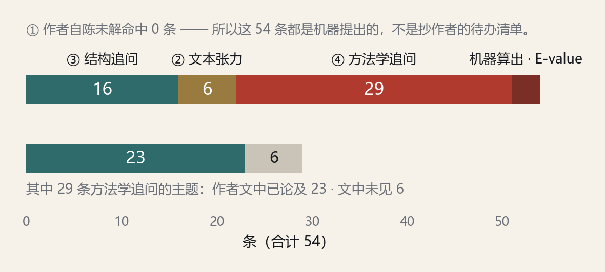
上：54 条的来源构成。下：29 条方法学追问里，主题作者已在文中论及 23 条 ，文中未见 6 条 。 ③ 结构追问 16 条：对结论句套范围 / 反例 / 机制 / 定量四问。② 文本张力 6 条：however / yet 处的分歧 → 形式化追问。④ 方法学追问 29 条：10 类缺口，每条带原文句子 + 判定路由。机器算出数值 3 条：从论文自报 HR/CI 算残余混杂门槛（下一页）。命令：ask-dao-machine paper papers/biomed/PMC13331974.md --domain biomed --out out/biomed_demo
07 / 26
二、在生物医学的实践 · 结果 ②
③ 结构追问 16 条：4 种问法 × 4 个结论 对论文里的结论句 逐条套四问。四种问法是固定模板 ；真正因论文而异的是「追问了哪几个结论」 ——所以这里每种问法只列一次。
范围追问 该结论的成立范围能否扩展（或收紧）到更一般的对象类？边界在哪里？反例追问 该结论的例外集有多大、由什么结构刻画？例外是否贴边界（=未收敛）？机制追问 该结论背后的机制是什么？在什么条件下（参数、噪声、尺度）会失效？定量追问 该结论给出的界是否紧？最坏情形是什么，何时达到？16 条 = 这 4 种问法 × 4 个被追问的结论 （In substitution analysis, replacin… · In model 2, BMI, eGFR, smoking, dr… · A substitution analysis was employ… · In the substitution analysis, repl…）。四种问法对任何结论句都能套；全部原句见 out/biomed_demo/problems_paper.json。
08 / 26
二、在生物医学的实践 · 结果 ③
② 文本张力 6 条（原句） 抓论文里 however / yet / inconsistent 处的分歧——这些是作者自己写下的「和前人不一样」的地方，机器把它们形式化成一个可判的追问 。
however 文中出现「however」处的分歧：However, the results from studies were not entirely consistent.触发原文：However, the results from studies were not entirely consis… yet 文中出现「yet」处的分歧：Moreover, the potential influence of polygenic risk for CKD on the relationship between AS consumption and the risk of d触发原文：Moreover, the potential influence of polygenic risk for CK… inconsistent 文中出现「inconsistent」处的分歧：In the genetic risk stratification analysis, we further excluded participants without genomic data (n = 2,928), Particip触发原文：In the genetic risk stratification analysis, we further ex… however 文中出现「however」处的分歧：However, several studies have used AS beverage consumption as a proxy for comparison study and meta-analysis [[5], [6], 触发原文：However, several studies have used AS beverage consumption… however 文中出现「however」处的分歧：However, a case-control study of 465 patients with CKD and 467 community controls found that artificially sweetened cola触发原文：However, a case-control study of 465 patients with CKD and… however 文中出现「however」处的分歧：However, several limitations in this study should be acknowledged.触发原文：However, several limitations in this study should be ackno… 分歧落在哪一层（定义 / 前提 / 判定标准 / 尺度），决定这条追问能不能被判。
09 / 26
二、在生物医学的实践 · 结果 ④
④ 方法学追问 29 条：10 类缺口各列 1 条（原句） 领域包按 10 类方法学缺口 逐条追问；每条都写成可判形式 ，并标明主题作者是否已在文中论及 。
人群外推边界 该效应量是在特定人群里测出来的：换人群（不同族裔、不同基线风险、志愿者偏健康的「健康志愿者效应」）后，是效应量缩放，还是方向都可能翻转？写成可判形式：给出该效应在不同基线风险下的绝对风险差，并说明在什么基线风险下绝对危害为零。判定路由：绝对风险重算（基线风险 × HR）+ 跨队列复现 · 文中未见 测量误差方向 暴露/结局是自报或单次测量的：这类误差是非差异性 （把效应推向无效、低估）还是差异性 （可能制造假阳性）？写成可判形式：用重复测量做回归校准，报告校准系数与校准后的效应量；若校准后效应变大，说明原结论被低估。判定路由：回归校准（regression calibration）+ 重复测量子样本 · 主题作者已论及 因果方向 文中给出的是关联，但设计默认了 X→Y 的方向：反向因果（结局或早期病变改变了暴露）能否解释该效应？用可检验的形式说：把随访前 k 年发生的事件剔除（lag 分析），效应量随 k 如何变化？若 k≥2 年就衰减到 1，说明什么？判定路由：滞后/剔除分析（lag analysis）+ 反向孟德尔随机化 · 主题作者已论及 残余混杂强度 该效应是「已调整」之后剩下的：残余混杂要多强才能把它解释掉？把它写成可算的形式：给定效应量与置信区间，算 E-value（未测混杂与暴露、结局的关联强度各自要达到多少，才能把效应推到无效），并给出最小混杂强度数值。判定路由：E-value / 敏感性分析（可精确计算） · 主题作者已论及 效应量 vs 判定阈值 由 HR 与 95% CI 直接给出：这个效应量有没有超过事先设定的决策阈值（临床/公共卫生意义上的）？换算成绝对尺度（每千人年多/少多少事件）、以及使结论翻转所需的最小偏倚或最小随访时间。判定路由：绝对风险差 / NNH 计算 + 阈值敏感性 · 文中未见 替代分析的反事实 替代模型的结论依赖「对照是什么」：把 A 换成 B，与「把 A 拿掉」、「A 换成 C」是两个不同的反事实，效应量不可互换。写成可判形式：明确反事实集，并检验结论在该反事实集内是否稳健（不同替代物之间的排序是否一致）。判定路由：反事实定义显式化 + 替代物排序稳健性检验 · 主题作者已论及 多重比较与假发现 文中做了多少个亚组/敏感性/次要结局检验？写成可判形式：报告检验总数与假发现率曲线，给出「FDR=5% 下仍然成立」的结论清单；若某一敏感性分析翻转结论，说明翻转阈值在哪里。判定路由：多重比较清单化 + FDR 曲线 + 翻转阈值 · 主题作者已论及 交互与尺度 联合暴露的「最高风险组」是相加还是相乘？写成可判形式：在加性与乘性两种尺度 上分别检验交互，报告 RERI / 交互 HR 及 P-interaction；并说明该交互是否通过了多重比较校正（未校正的亚组交互是最常见的假阳性来源）。判定路由：加性/乘性交互分解（RERI）+ 多重比较校正 · 主题作者已论及 剂量—反应形状 文中把暴露分组比较，但没有给出函数形状：单调、阈值，还是非单调（低剂量有益、高剂量有害）？写成可判形式：在连续暴露上拟合样条/分段模型，检验非线性（P-nonlinear），给出拐点位置与其置信区间。判定路由：限制立方样条 + 非线性检验（拐点估计） · 主题作者已论及 机制必要性 文中提到机制但不区分必要性 与充分性 ：敲掉该通路，效应是否消失（必要）？单独激活该通路，是否足以复制效应（充分）？写成可判形式：给出两问各自的实验设计（KO + rescue / 激活剂），以及在人样本上可观察的中间量。判定路由：必要性与充分性实验设计（KO+rescue）+ 中介分析 · 主题作者已论及 全 29 条中，主题作者已论及 23 条 、文中未见 6 条 ；另有 3 条是机器直接算出的数值（见下页）。完整清单见 docs/guide/demo-biomed.md。
10 / 26
二、在生物医学的实践 · 结果 ④（新知识）
机器算出来的三个残余混杂门槛 观察性研究的天生软肋：没人测过的东西 可能才是真凶。E-value 回答一个问题——那个东西得多强，才能把这条结论解释掉？
1.67 代糖吃得多 → 肾病风险高 19%
2.34 代糖多 + 遗传风险高 → 高 49% 最稳
1.16 用代糖替代糖 → 高 2% 几乎站不住
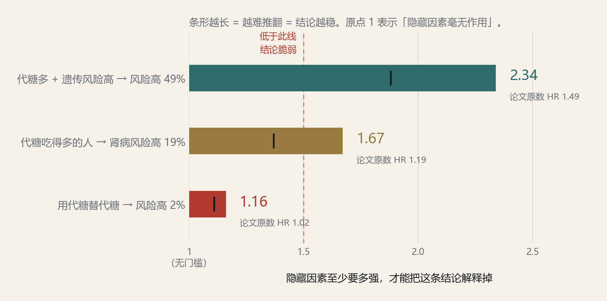
条形越长 = 越难推翻 = 结论越稳；原点 1 表示「隐藏因素毫无作用」。红色虚线（1.5）以下为脆弱区；黑色短竖线是按 95% CI 下界 重算的保守读数。 原文中 “E-value” 出现 0 次 ——这三个数是机器用论文自报的 HR/CI 算出来的。纪律：这是门槛，不是结论 ，也推不出任何饮食或用药建议。
11 / 26
二、在生物医学的实践 · 真实使用
真实跑一遍：命令与产物 下面是真实命令序列与未删改的输出 （不是示意）。产物固定落在 --out 目录：problems_*.json + REPORT.md。
完整回放与逐条证据句见手册：docs/guide/demo-biomed.md。
12 / 26
二、在生物医学的实践 · 经验
这次实践学到的三件事 经验比结果更值得带走——下面三条都是被真实数据打出来的，不是设计时想到的。
① 必须把「作者已提出」单独分出来 29 条方法学追问里 23 条的主题作者已在文中论及 。机器加的是可判形式 （滞后分析、E-value 门槛、RERI、回归校准…），不是话题本身。不分标就会把「复述」当成「发现」。② 领域包的价值在于「会算」 10 类缺口只是清单；真正有用的是从论文自报的 HR/CI 直接算出门槛 ——这是任何读者都能复核的数，而不是一句「可能有残余混杂」。③ 门槛 ≠ 结论 E-value 1.67 说的是「混杂要强到这个程度才能解释掉」，不是说效应是真的 ，更推不出任何用药、摄入或诊断建议。这条边界必须写在产出里，而不是写在附录里。门控：产出的每一条问题都带 evidence（原文句），可逐条回原文核对。
13 / 26
三、dao 模型在生物医学的实践
dao-v 0.3：一个专门用来提问的微调模型 v0.3 = v0.2 + RFT 后训练 （low-lr 训练 + LLM-as-judge 过滤数据）。它的任务不是回答问题，而是从论文证据、方法局限与结果细节中，提出作者没有明说、但值得进一步探究的开放科学问题 。目前领域限制于生物医学。
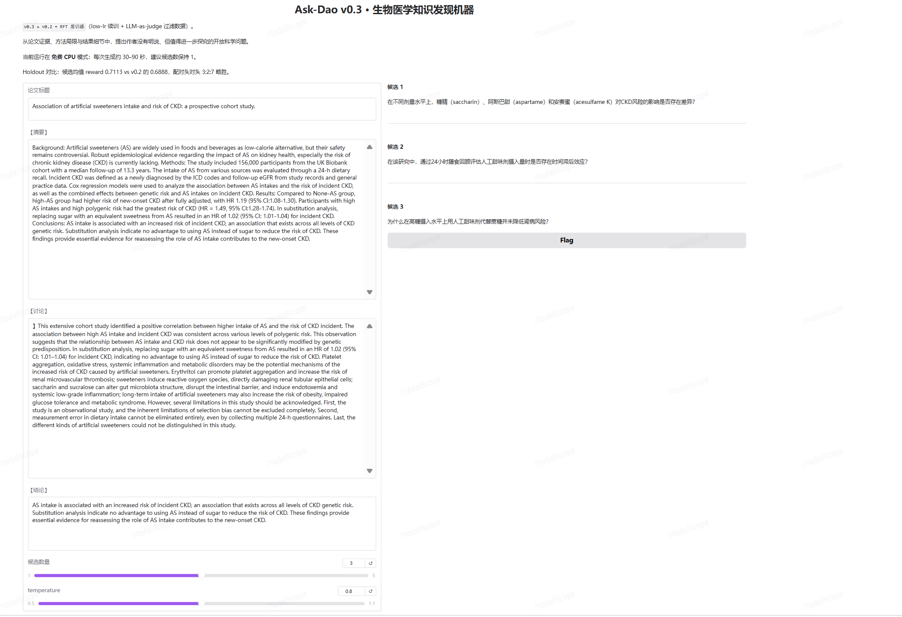
ModelScope studio 上的真实运行界面 （Ask-Dao v0.3 · 生物医学知识发现机器）：左侧是论文的摘要 / 讨论 / 结论，右侧是模型现场生成的候选问题，底部可调候选数量与 temperature。 地址：modelscope.cn/studios/skopskp/dao-v-0.3。当前跑在免费 CPU 模式（每次生成约 30–90 秒），所以界面上把候选数调小。
14 / 26
三、dao 模型在生物医学的实践 · 它产出的问题
模型现场生成的三个问题（原句） 同一个输入（就是上一篇论文的摘要 / 讨论 / 结论），模型给出的候选问题——注意它们都是问句，而且是原文没问过的 。
候选 1 · 剂量差异 在不同剂量水平上，糖精（saccharin）、阿斯巴甜（aspartame）和安赛蜜（acesulfame K）对 CKD 风险的影响是否存在差异？候选 2 · 时间滞后 在该研究中，通过 24 小时膳食回顾评估人工甜味剂摄入量时是否存在时间滞后效应？候选 3 · 追问反直觉处 为什么在高糖摄入水平上用人工甜味剂代替蔗糖并未降低肾病风险？Holdout 对比 ：候选均值 reward 0.7113 vs v0.2 的 0.6888，配对头对 3:2:7 领先。换句话说，微调之后模型提出的问题，被判为「值得探究」的比例更高了。
15 / 26
三、dao 模型在生物医学的实践 · 经验与边界
这个模型做到了什么、还差什么 它已经能稳定产出真问题 ；但它的能力边界必须说清楚。
做到了：会问「反直觉处」 候选 3 是模型自己发现论文里的反直觉点——论文说「换代糖没有好处」，模型直接追问为什么没有降低风险 。这不是复述，是找到了值得深挖的缝。做到了：问题带领域手艺 候选 1 问不同甜味剂种类 的差异，候选 2 问 24 小时膳食回顾的时间滞后 ——这两条都是流行病学方法学里的真问题，不是泛泛而谈。边界一：只有生物医学 目前领域限制于生物医学 ，靠的是领域语料与后训练；换领域需要重新做数据与训练。边界二：它只提问，不判定 模型负责「问得好」，判定交给判定器与人类 ——它产出的候选仍需过四道门，不能自称发现。分工：模型提问题 → 判定层筛真假 → 人类裁决要不要投入 。这也是为什么 N3 仍为 0：会提问不等于发现了世界新知识。
16 / 26
四、扩展的实践 · 想象路
另一条路：把「造词」做成能跑完的流水线 想象路不是问题路的子功能，而是与它并列的一条路 。6,642 个领域专业词组合，每个都要走完五步，产出的是被理解的概念 。
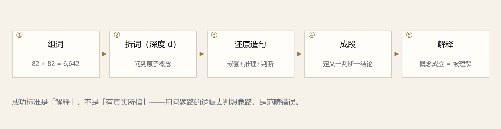
五步流水线。原则：每个词都有意义，只不过是我们缺少想象力，无法理解它 ——因此不存在空想。 版本线：v0.2 产品 → v0.3.0 两条路 → v0.3.1 可视化/README → v0.4 问题树 → v0.5（问道）。
17 / 26
四、扩展的实践 · 问题路规模化
问题路：544 条问题覆盖 23 个领域 这一代把「提问题」从零散试探变成全领域并行扫描 + 分层问题树 ，并第一次有了独立的裁决环节。
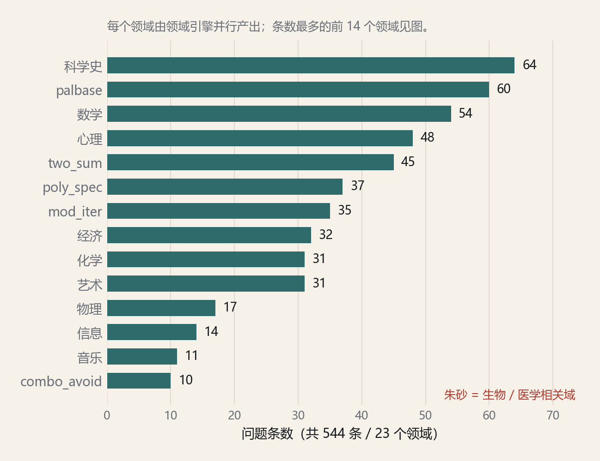
544 条问题的领域分布（条数最多的前 14 个领域）。朱砂标出的是与生物 / 医学相关的领域。 全领域扫描 领域引擎并行产出，每个领域一份问题清单。反例驱动 专门提「机器结算不了」的问题——只提自己答不出的 。问题树 L0–L5 分层 + 谱系门：每爬一层必须机器实测。入口多样 外部信息（网页 / arXiv / 科学史）· 日常疑问 · 母题，都能成为问题的种子。产物：out/demo/discovery_manifest.json（544 条，字段含 daily_question → scientific_question → judge_route）。
18 / 26
四、扩展的实践 · 独立裁决
独立裁决：15 个进制命题的判决 这是全项目里最像「新知识」的一类产出，判据是数值汇合 ，不是证明。换一套实现重算，结果必须一致。
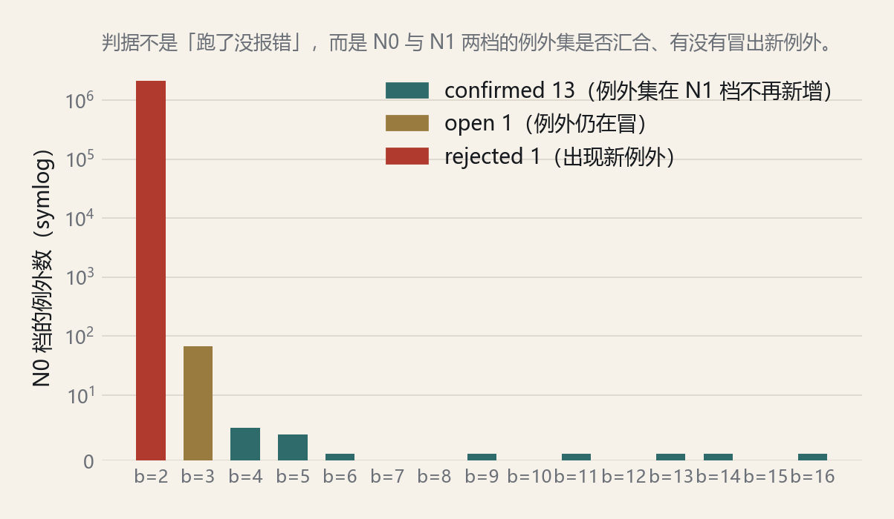
青 confirmed 13（例外集在 N1 档不再新增）· 青铜 open 1（例外仍在冒）· 朱砂 rejected 1（出现新例外）——机器自己否掉了自己的命题 。 命题 每个 n ≥ 4 可写为 base-b 回文数 + 素数；b ≥ 4 时例外集有限且很小。判据 N0 = 5×10⁶ → N1 = 10⁷，两档的例外集是否汇合、有没有冒出新例外。边界推进 base 10 推到 10⁸ 零例外 （人类讨论此前止于 ~10⁶），两种独立实现交叉验证。自我更正 旧账本曾记 base 4 有 20 万个例外，真值 5 ——错的是账本，不是结论 ，并出更正页。分级：N0 已知 → N1 大概率已知 → N2 疑似未见 → N3 世界新。N3 至今仍为 0。
19 / 26
四、扩展的实践 · 经验
系统侧学到的两件事 这两条都是「机器自己试出来」的，而不是从外部抄来的方法论。
① 独立实现比自证更有用 同一命题换一套实现重算（另写 FFT 版本复算 base 3–47），b=3 的 68 个例外清单逐项一致 才敢认。自证只能发现笔误，换实现能发现口径错。② 账本必须可作废 旧账本记 base 4 有 20 万个例外，真值是 5。记错账比算错数更危险 ——所以有了 docs/novelty_ledger_corrections.md，对 1,219 处标注 + 三套独立复算 + 作废声明。纪律：机器答不出的问题要明确写「悬置」 ，不能悄悄丢掉，也不能包装成结论。
20 / 26
四、扩展的实践 · 跨域融合
领域融合：27 个领域 → 144 座结构桥梁 融合不是把两个领域的词拼在一起，而是找共享结构 ；没有共享结构的配对判为空洞笛卡尔积 ，不计入桥梁。
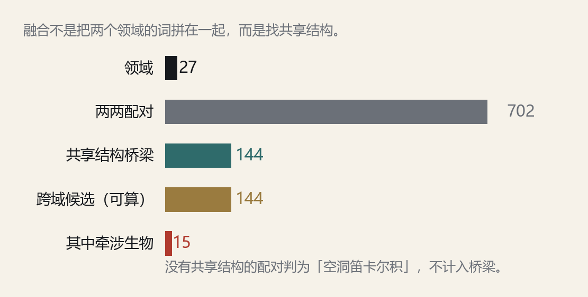
27 个领域两两配对得 702 个组合，其中 144 个被判定为共享结构 → 144 个跨域候选（全部可算）。 为什么不是排列组合 两个领域没共享结构时，拼出来的问题是套话 ，不是问题。生物相关的融合 跨域候选里有牵涉生物学的桥梁 （如「用数论方法问生物对象」），这类候选直接落到可算的判定路由上。每条都实跑过 144 条候选全部标注为「可算」 ，各带一条判定路由。产物：out/demo/field_fusion.json（fields / total_pairs / cross_hot / candidates）。
21 / 26
四、扩展的实践 · 校准自己
同一套判据，换领域照样跑 复核性结果的价值是校准自己 ：机器重算出的已知结果对上了，才有资格谈没见过的那部分。
三项与已知文献/数据库对表通过（音乐集合类 224 与 Forte 一致；多完全数与 OEIS A007539 一致；base 10 覆盖两种实现交叉验证）。 数学 · 序列结构 Collatz 链长、多边形数覆盖、5×5 二值纹样 D4 轨道数——可迭代枚举复算。音乐 · 集合类 Tn/TnI 集合类 224 （与 Forte 224 一致）；最大熵集合类恰 2 个 。记录 · 多完全数 k=2,3,4：{6,28,496,8128} / {120,672,523776} / {30240,32760}（对齐 A007539）。未见候选分级 独立 5 · 强 34 · 弱 0 · 短 2——这只是 OEIS 沉默 + 机制非平凡，不是文献门，更不是显著性证书 。诚实标注：分级不等于新颖性；它只说明「在参照系里没见到」，需要人工或文献门复核。
22 / 26
四、扩展的实践 · 经验检索桥
经验检索桥：6,642 个组合词接上现实经验 桥的作用是让想象力有据可依 ，而不是当裁判。检索未见不等于 概念为假；见不到也不阻止理解。
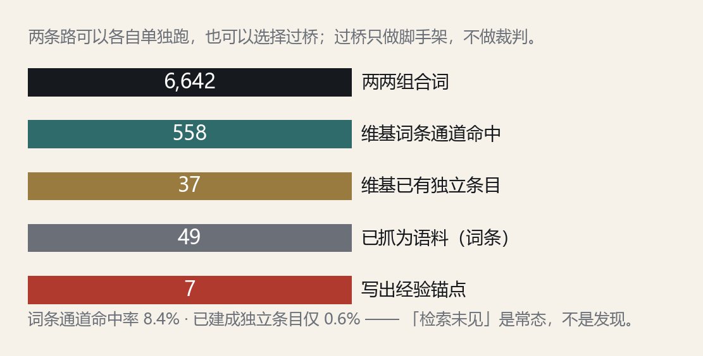
6,642 个组合词过双通道检索：词条通道命中 558 个，其中已建成独立条目仅 37 个；抓成语料 49 个词条，写出经验锚点 7 处。 命中率本身就是发现 词条通道命中约 8.4%，已建成独立条目约 0.6%。「检索未见」是常态，不是发现。 桥不改变判定 过桥不改变任何判定；检索失败即退化为无锚点，概念照样成立（判据是「被理解」）。默认不过桥 默认只对少数指定组合写锚点；全量检索需要显式开关。产物：out/demo/browser_mass_search.json · data/wiki/（语料）· out/demo/word_understand.json（锚点）。
23 / 26
五、接下来的方向
多模态实体提取：让图像与声音进入两条路 现在经验只能以文字进入 系统；图像与声音还没有进入两条路的入口。下一步是把这个「反向」补上——尚未实现 。
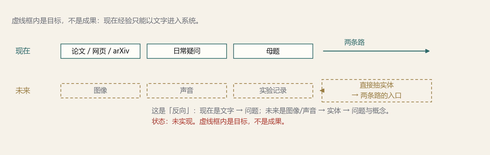
实线 = 现在能做的（文字 → 问题 / 概念）。虚线 = 目标（图像 / 声音 → 直接抽实体 → 两条路的入口）。虚线框内是目标，不是成果。 已有最小闭环：perceive 能把图像 → 结构特征 → 带判定路由的问题；但它抽取的是结构特征 ，还不是实体。
24 / 26
五、遇到的瓶颈
尚未发现 N3 级新问题 问题是真的、量也很大；但「真的」不等于「新的」 。这台机器停在这一步。
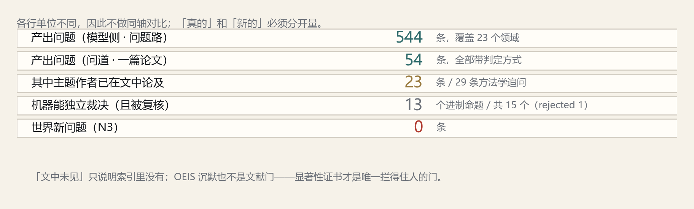
「N3 = 0」在账本里被独立记下 11 次，从未改变。各行的单位不同，因此不做同轴对比。 差距的具体位置 ：机器能判的问题里，多数主题前人已经问过 ；真正缺的不是产能，而是能穿过显著性证书、且前人没问过 的那一格。下一步要把力气放在「显著性证书」这道门上，而不是继续加产能。
25 / 26
ASK-DAO-MACHINE
谢谢 问道 · ask-dao-machine · MIT License · 全部数字可用仓库里的命令复现
26 / 26